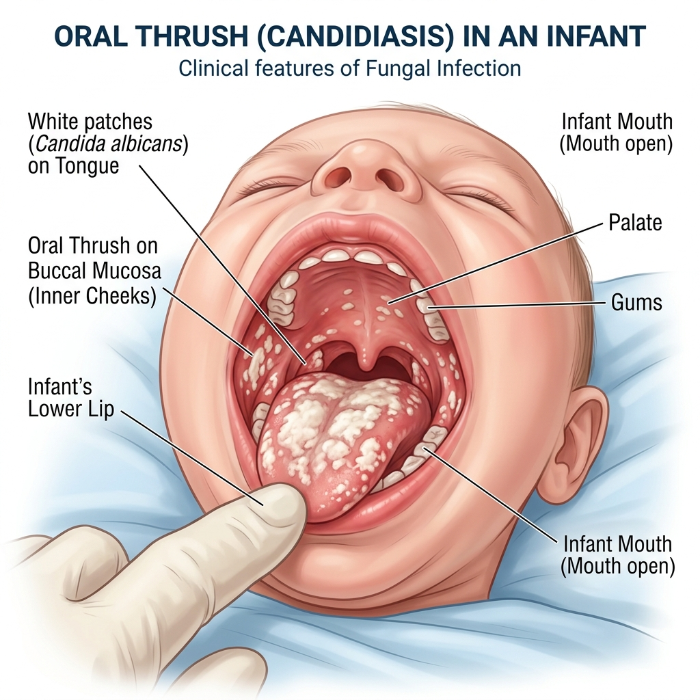

التعرف على الأمراض الشائعة وعلامات الخطر التي تتطلب استشارة طبية فورية
24/7
مراقبة
123
طوارئ
100%
حماية
استشارة طبية
عند الحاجة
لاحظى علامات الخطر مثل سرعة التنفس وصوت الصدر غير الطبيعى (نهجان أو تزييق) واستشيري الطبيب فوراً.
الإسهال، المغص، والارتجاع. يحب مراقبة عدد مرات الحمام وقوام البراز.

أهمها فطريات الفم (بقع بيضاء كثيفة على اللسان والخد من الداخل) وطفح الحفاض.
عند حدوث إسهال، اتبعي الخطوات التالية فوراً لمنع تدهور الحالة:
أخذ محلول معالجة الجفاف في المنزل حسب الإرشادات الطبية.
الاستمرار في الرضاعة الطبيعية أو الصناعية بانتظام.
إعطاء الزنك (دواء شرب) لتقليل حدة الإسهال.
الاهتمام الفائق بنظافة اليدين والأدوات.